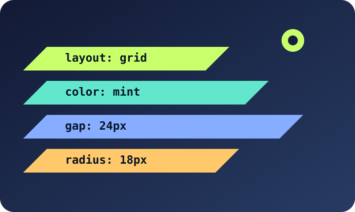

CSS — оформление страницы
Раздел 1. Для чего нужен CSS
CSS отвечает за цвета, размеры, отступы и расположение элементов. Правила состоят из селектора и свойств.
p {
color: blue;
font-size: 16px;
}
Раздел 2. Основные свойства
- color — цвет текста.
- background — фон.
- margin и padding — отступы.
CSS позволяет сделать страницу удобной для чтения и на телефоне, и на компьютере.
Подробнее: справочник CSS.